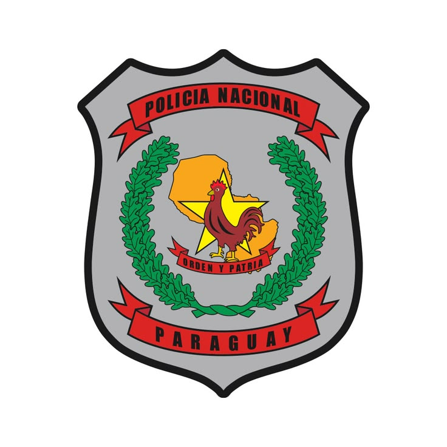
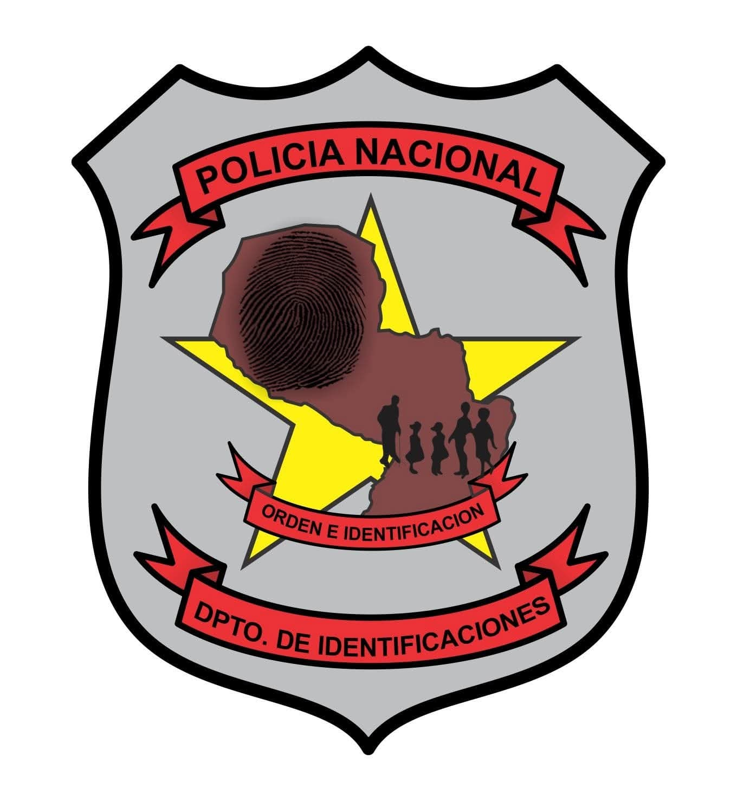
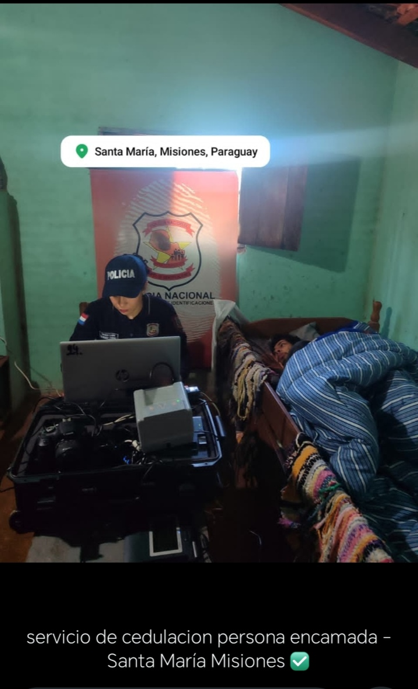

Policía Nacional del Paraguay

El Departamento de Identificaciones es un organismo técnico-científico de la Policía Nacional que presta servicios en todo el territorio de la República del Paraguay mediante oficinas regionales, garantizando el derecho a la identidad de los ciudadanos.
Mantener y organizar el servicio de identificación personal, expedir cédulas de identidad, pasaportes, certificados de antecedentes y otros documentos relacionados, asegurando la protección de los datos personales mediante tecnología y altos estándares de seguridad.
Brindar un servicio moderno, confiable y eficiente, acercando la documentación a toda la ciudadanía con procesos seguros y atención de excelencia.
Profesionalismo
Responsabilidad
Confiabilidad
Respeto
Expedición y renovación de cédulas de identidad.
Emisión y renovación de pasaportes paraguayos.
Expedición de certificados de antecedentes policiales.
Servicio dirigido a personas con discapacidad, adultos mayores y personas en situación de cama que no pueden trasladarse hasta la oficina.
Santa María - Misiones
Funcionarios de la Oficina Regional del Departamento de Identificaciones de San Ignacio realizaron un servicio de cedulación a domicilio para garantizar el derecho a la identidad de una persona en situación de cama, reafirmando el compromiso institucional con la comunidad.
